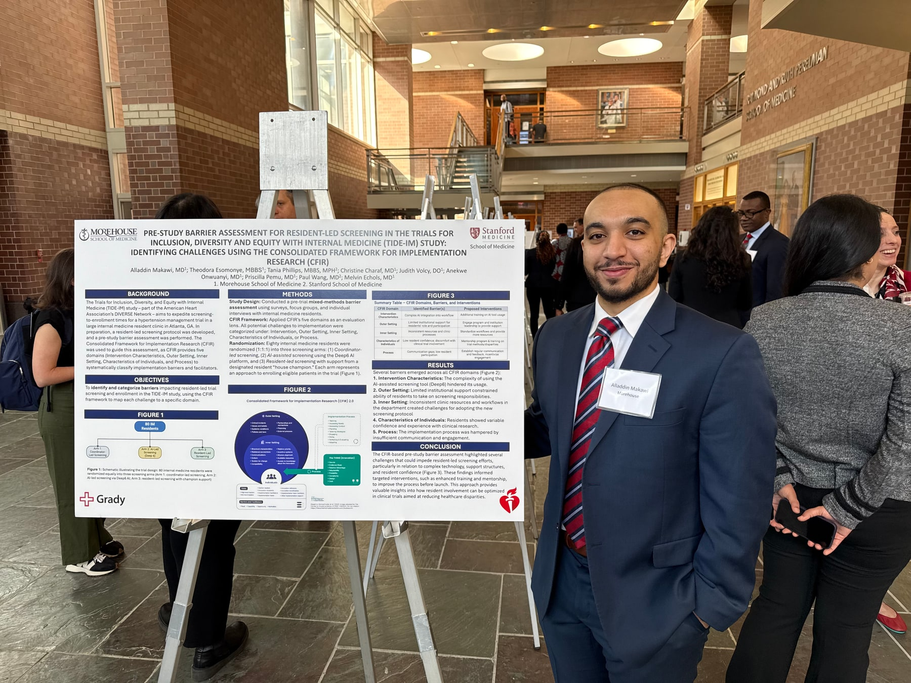
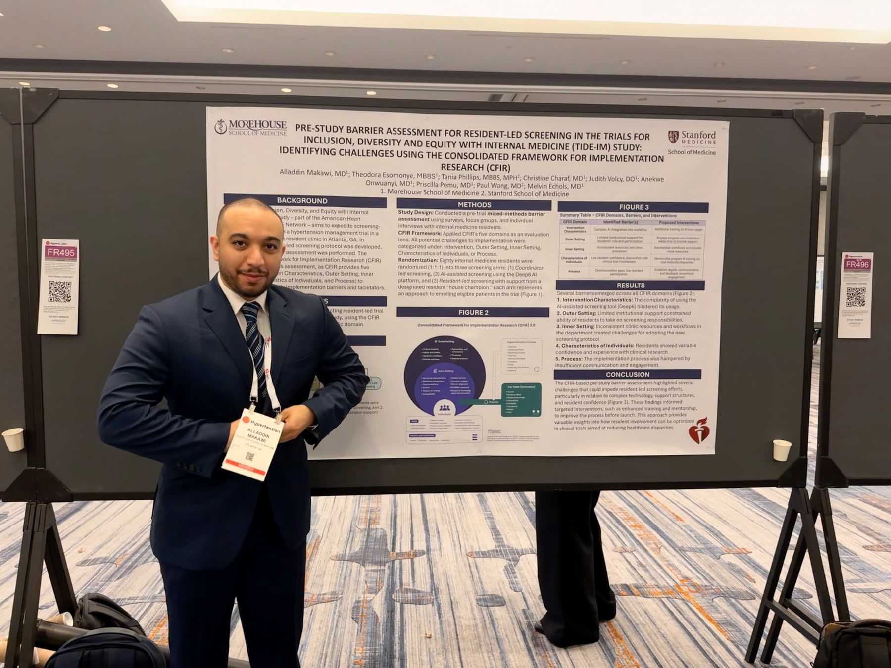
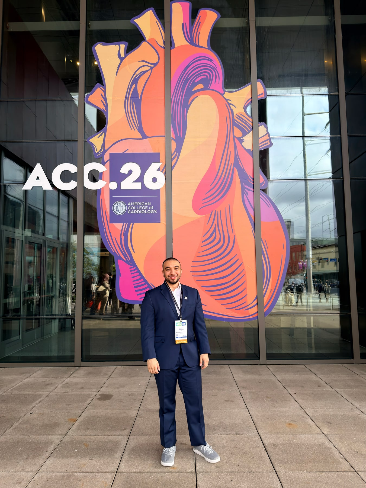

Bringing resident-investigator work into a broader research setting
Poster discussion creates space to test assumptions, sharpen methods, and connect a local workflow problem to lessons from other institutions.
Presentations & posters
Selected presentations from cardiovascular, implementation-science, and resident-investigator projects by Alladdin Yousif Makawi, MD.

Hypertension · 2025
The TIDE-IM pre-study barrier assessment examined the practical conditions surrounding resident-led screening and clinical-trial inclusion. The work reflects a recurring implementation principle: understand the people, constraints, and handoffs around a process before designing the intervention.
View the published abstractSelected moments
Each image is paired with the actual project or event it represents, so the record remains useful to colleagues, trainees, and collaborators.

Poster discussion creates space to test assumptions, sharpen methods, and connect a local workflow problem to lessons from other institutions.

The TIDE-IM Resident Investigators presented the rationale and design of a resource guide intended to make clinical investigation and quality-improvement work more navigable for residents.
View the published abstract
Conference context
Meetings are where a publication record becomes a living exchange—through questions, collaboration, mentorship, and exposure to work outside one’s immediate program. This portrait was made at ACC.26 in New Orleans after the resident-investigator presentation.
Browse the research works